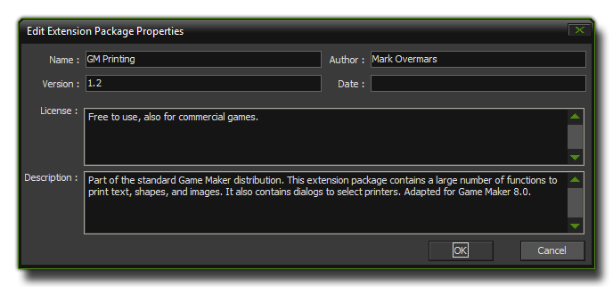
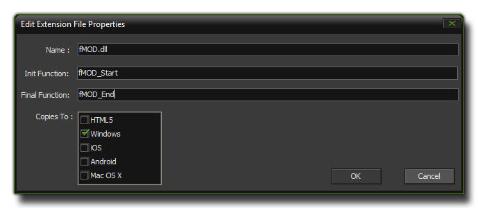
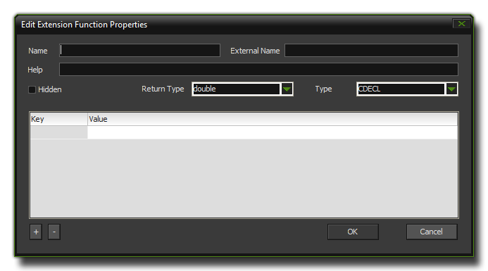

Creating An Extension
This section details how to use extensions in GameMaker:Studio.
To create an extension (no matter what format file you are using) you must first start by right clicking on the Extension resource in the resource tree and selecting Create Extension
which will open the following window :

Here you can give your extension a name, fill in the author details, add licensing information and a brief description of what the extension is for. If you choose to export your finished extension as
a *.gex for distribution, all this information will be saved along with it. Once that is done, you then have to go and add the file (or files) that you wish to use for the gex, and this is done by
right clicking on the new extension and selecting Add File. This will open up a normal explorer window where you can select the file to import into your extension.
The choice of file greatly influences how GameMaker:Studio will use the extension as different file types will influence the target platforms that it can be used on when you compile your game. You
can have three types of extensions in GameMaker:Studio :
- GML : This is an extension made only with the GameMaker Language and is compatible with all platforms.
- .js : This is a JavaScript extension and is only compatible with the HTML5 target.
- .dll : This a dynamic-link library extension and is only compatible with the Windows target.
File Properties
As you can see, not all extensions are compatible with all target platforms, so you should first open up the extensions resource tree and select for each of the installed extensions a target from their
Extension Properties. This can be achieved by double clicking on the extension file (NOT the package itself), or by right clicking and selecting "Extension Properties" from the pop up
menu. Either action will open up the following window :

In this window you can re-name the file that is to be used as the extension (this file is then saved with the gmx project and any changes should be made in the project file, and not to the
original) and you can define the Init Function and the Final Function. These functions are the ones that the *.dll or *.js needs to have called to set them up for use with GameMaker:Studio
and to free them again when the game closes. They are called automatically, with no arguments, and you should note that these are not always necessary so you should check the documentation for the file
you wish to use as an extension first to see if these functions are necessary or can be left blank.
The final section is labelled Copies To. Here you can see a list of target platforms which you can tick (or un-tick) as appropriate for your extension. In this way, you can have (for example)
two hi-score extensions, one *.dll and one *.js that have the same functionality but work for different target platforms. You would tick ONLY the Windows checkbox for the *.dll and ONLY the HTML5
checkbox for the *.js and then GameMaker will know to use only the appropriate one for the target platform. You can also set up different configurations and tick/un-tick options as
necessary depending on the current configuration chosen (for more information see Advanced Use : Configurations).
Adding Functions and Constants
Now you have added the necessary files to the extension, it is time for you to add the functions and constants that you wish the extension to use. This is done by right-clicking on the file and selecting either Add Function or Add Constant. For a constant, it is simply a case of giving it a name (only letters from A-Z, numbers and the under-bar "_" symbol are permitted, and the name must not start with a number) and a value and then clicking on the "Okay" button. if you choose to add a function, then the following window will open :  The different options presented here are :
- Name - This is the GML name of the function (only letters from A-Z, numbers and the under-bar "_" symbol are permitted, and the name must not start with a number).
- External Name - Here you must put the name of the original function as it is recognised by the extension, even if the Name is the same.
- Help - This is the text that will appear at the bottom of the script editor and should be a correct form of the function syntax with the format function(argument0,argument1).
- Return Type - What the function returns. This can be either a string (text) or a double (real number).
- Type (dll only) - The calling convention used to call the function.
- Arguments - Here you can list all the arguments that your function can take as well as the type (string or double). this is limited to a maximum of sixteen arguments.
Once you have defined all your constants and functions, the extension is ready to be used and distributed as a *.gex. To create a *.gex all you have to do is right-click on the extension name and select
Export to Gex, which will open a save dialogue where you can say where to save the final *.gex file to. Once this is done you can then use the same gex in other projects, or distribute it for others to
use.
Note : A saved *.gex does not save the configuration options, and those will have to be set whenever you load a created gex into a new project.